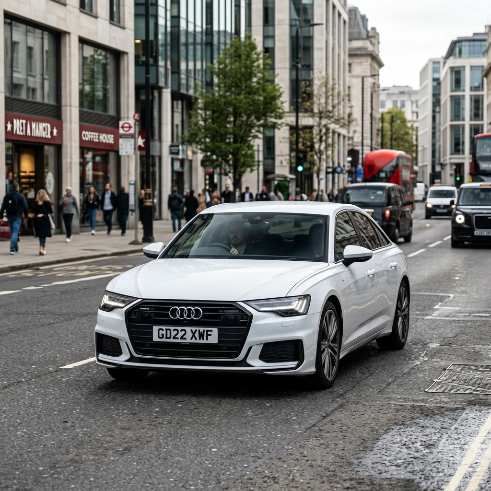
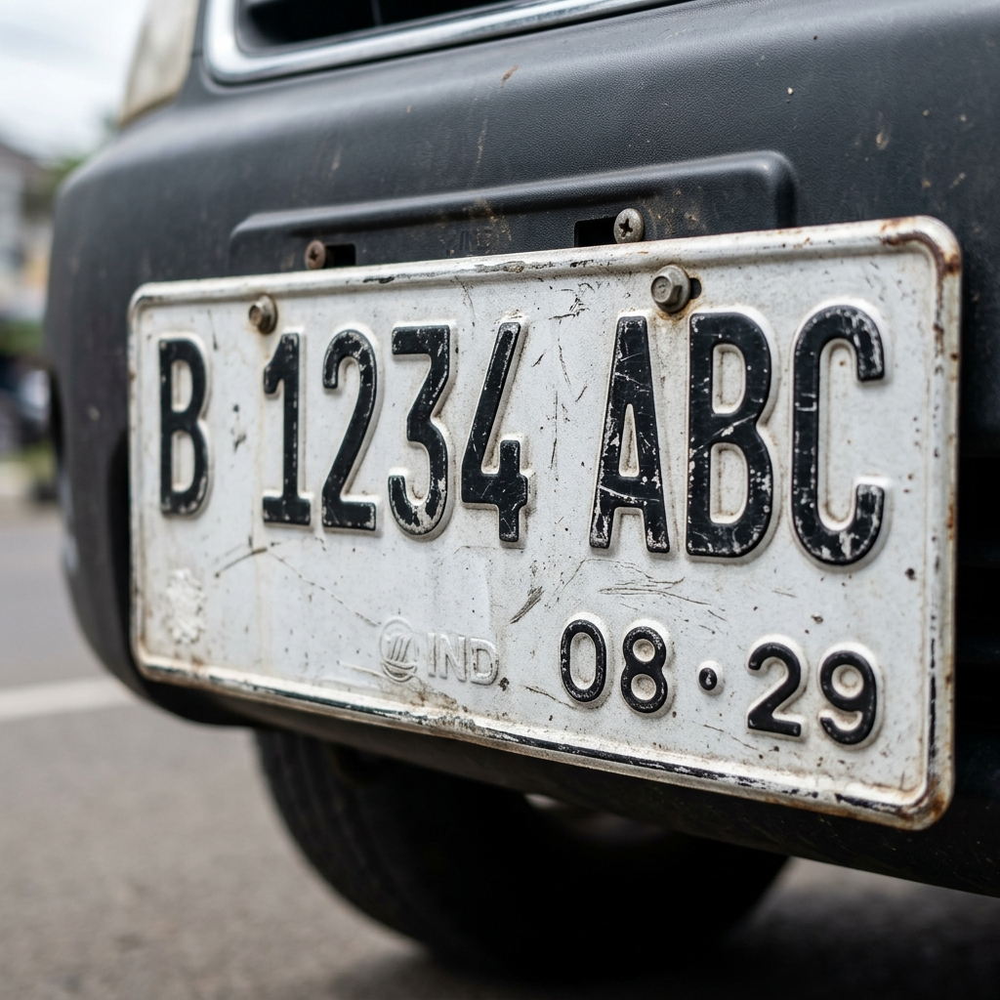

"Makassar is the gateway to Eastern Indonesia — over 1.5 million vehicles, growing 8% every year, and almost zero automated monitoring."


{ "vehicle_type": "car", "vehicle_bbox": [123, 45, 678, 901], "plate_bbox": [456, 78, 567, 123], "plate_number": "B 1234 ABC", "plate_date": "08/29", "plate_text_color": "black", "plate_background_color": "white", "plate_blue_strip": "no", "plate_type": "private", "confidence_score": 0.94 }
Persona & System + Chain of Thought
SYSTEM: You are a senior PM for AI Smart City apps. Concise output. 30-min live demo scope. USER: Build a minimal Smart LPR app for Makassar. Think step-by-step: 1. Define single core user flow 2. Backend spec (1 endpoint, 3 Gemini calls) 3. Gemini I/O per step 4. Done criteria + Out-of-scope list
Few Shot + Tree of Thought
Multi-Stage Prompting · Build order: UI → Backend → AI
Building the UI first provides immediate visual feedback. We then wire it to a stubbed backend to test connectivity, and finally inject the AI intelligence once the pipes are working.
Modern UI with Drag & Drop + Loading States
// On Scan Click async def handleScan(): showLoading(true); cycleSteps(); // 2s per step try { const res = await fetch('/detect', { method: 'POST', body: formData(file) }); renderResult(await res.json()); } catch (e) { showError(e); }
FastAPI + Image Processing Utilities
from fastapi import FastAPI from PIL import Image app = FastAPI() def gemini_crop(img, bbox): # Crop logic: normalization check + padding return img.crop(coords) @app.post("/detect") async def detect(file: UploadFile): return {"plate": "OK", "score": 0.0}
Chaining Multi-Step Visual Reasoning
# Call 1: Vehicle Detect v_res = model.generate([img, PROMPT_VEHICLE]) v_crop = gemini_crop(img, v_res.bbox) # Call 2: Plate Detect p_res = model.generate([v_crop, PROMPT_PLATE]) p_crop = gemini_crop(v_crop, p_res.bbox) # Call 3: OCR ocr = model.generate([p_crop, PROMPT_OCR]) return json.loads(clean_json(ocr.text))
Edge Case Validation · Robustness Testing
Final Optimization · Performance & UX Audit
Complex AI tasks are just simple steps chained together. Vehicle detect → plate detect → OCR. Break every problem into the smallest possible steps.
Gemini reads a plate more accurately when it sees just the plate — not the full original image. Cropping is context engineering, not just image processing.
A precise, well-structured prompt is the core intellectual property of an AI application. The prompt is more valuable than the code around it.
"Six months ago this required a CV engineer, a custom-trained OCR model, weeks of labeled data, and ML infrastructure. Today it required a clear prompt, the right context, Gemini Vision, and 30 minutes."